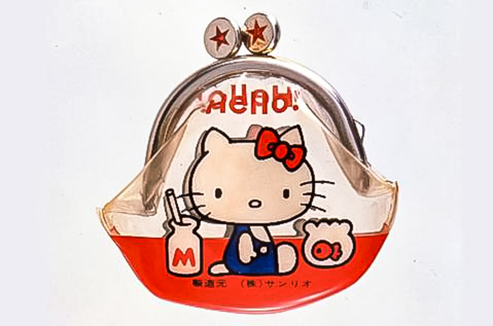

Istorie
în 1962, Shintaro Tsuji, fondatorul Sanrio, a început să vândă sandale de cauciuc cu flori pictate pe ele. Tsuji a remarcat profiturile obţinute prin adăugarea unui desen drăguţ sandalelor,iar astfel a angajat caricaturişti pentru a proiecta personaje simpatice pentru marfa sa.Compania a produs o linie de mărfuri cu caractere pe care le ofereau cu diferite ocazii cadou. Hello Kitty a fost proiectat de Yuko Shimizu şi a fost adăugat la gama de caractere timpurii Sanrio în 1974. Prima apariţie a personajului Hello Kitty a fost pe un vinil pungă de monede din Japonia unde a fost înfăţişată stând între o sticlă de lapte şi un castron auriu.
Pagina principală
